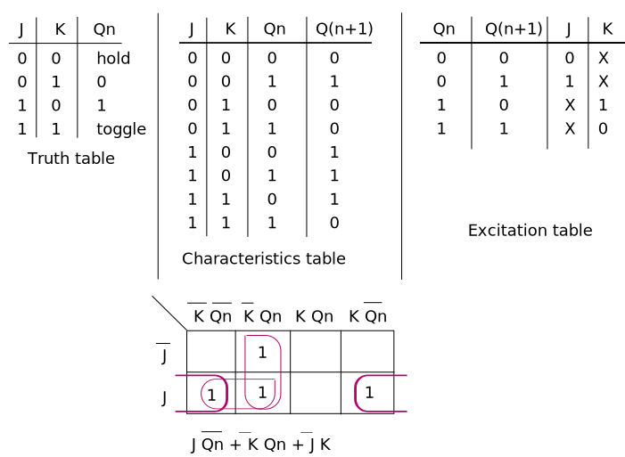
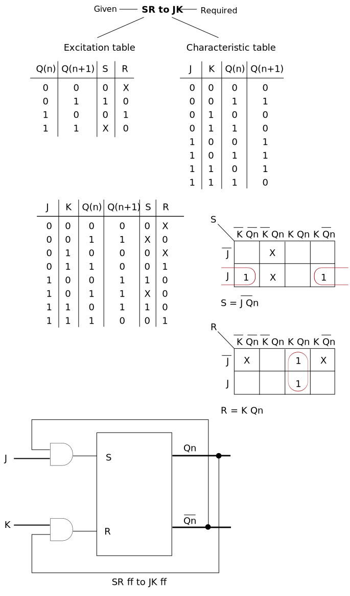
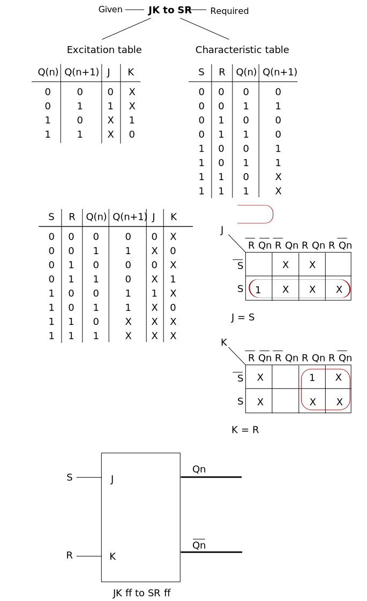
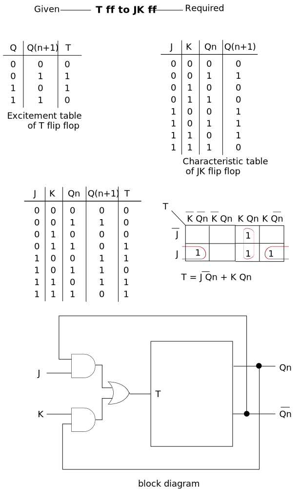

Sequential Circuit
- "In sequential circuits, the present output depends on the present input as well as past output/outputs".
First we should know about latches so that we can understand flip-flop.
Latches
- Basic memory element.
- All memory element those are made from latches.
- Latches are level triggered
- Latces has two output which is complement of each other.
Now we will learn some latches and how to make their truth table.
X Y latch (NAND Gate)
Set Reset latch
- In latches as soon as we provide input we get output but if we want to control the output we use clock.
- So latches with a control phenomenon are called flip-flop.
SR flip-flop using NAND gate
- We know about SR latch using NAND gate so we are going to use it here.
SR latch using NAND gate ↓
SR flip-flop ↓
SR flip-flop using NOR gate
SR latch using NOR gate
SR flip-flop
Characteristic table and equation
- As we know in truth table of SR ff there are two inputs (S and R) using which output (Qn) is generated.
- In characteristic table we have three inputs S, R and Qn (present output), now on these basis what will be the next output (Qn+1).
Excitation table
- What is the input according to the present state and next state outputs.
- We require characteristic table to make excitation table.
- Characteristic and excitation table is used when we want to design one flip flop from another.
JK flip-flop
- SR flip-flop is the basic flip-flop using which we can design other flip-flops.
- JK flip-flop is 75% SR flip-flop.
Characteristic table and equation and Excitation table
Race Around Condition
It is a situation when all these 3 condition occurs simultaneusly.
- Condition 1: Level triggered J-K Flip Flop
- Condition 2: When J = K = 1 (Toggle Mode)
- Condition 3: Tw >= Td
- In this condition we are uncertain about the output as the Tw is larger then Td then output generated goes again to first NAND gates as input which generate another result. In a single clock pulse many output are generated.
Master Slave JK flip-flop
- As we know in JK flip flop there is a problem of 'race around' problem. To resolve this problem Master Slave JK flip flop was introduced.
- The surpose of Master slave JK flip flop is to control the feedback so that there is no toggle.
D flip flop
- It is also known as transparent latch/flip flop or memory device.
- Output is same as input.
T (toggle) flip flop

Flip Flop conversion
SR ff to D ff
- If we have to convert given flip flop to required flip flop that means we want behaviour and characteristics of required flip flop using given flip flop.
- So in this case we will use characteristic table of D flip flop as it is required flip flop.
- How we can excite SR flip flop so that it behaves like D flip flop.
SR to JK
JK to SR
T to JK
Registers
- Flip Flip is 1-bit memory cell.
- To increase the storage capacity, we have to use group of flip-flop. This group of ff is known as Register.
- The n-bit register consist of "n" number of flip-flops and is capable of storing "n-bit" word.
Shift register
- A register that transfer data either to the right or to the left is called a shift register.
- It consists of chain of flip-flops. The output of one flip-flop is connected to the input of the next flip-flop.
SISO (Serial In Serial Out shift register)
- A basic four-bit shift register can be constructred using four D-flip-flops.
- The register is first cleared, forcing all four outputs to zero.
- The input data is then applied sequentially to the D0 input of the first flip on the left (FF0).
- During each clock pulse, one bit is transmitted from left to right.
SIPO (Serial In Parallel Out shift register)
- For this register the input data bits are entered serial wise but the data bits are taken (output) parallely means each flip-flop gives output.
- Once the data are stored, each bit appears on its respective output line, and all bits are available simultaneusly.
PISO (Parallel In Serial Out shift register)
- In this register bits are entered in parallel / simultaneusly.
- Here the output of first flip-flop FF0 is connected as input to the next flip-flop via combinational circuit (multiplexer). In this combinational circuit we have two AND gate and one OR gate
- There are two mode in which this register can work.
- Load mode: Using this mode we get parallel input in the flip-flops simultaneusly. For load we take shift as 0.
- Shift mode
PIPO (Parallel In Serial Out shift register)
Applications of registers
Shift registers can be found in many applications. Here is a list of a few.
- To produce time delay
- To simplify combinational logic
- To convert serial data to parallel data